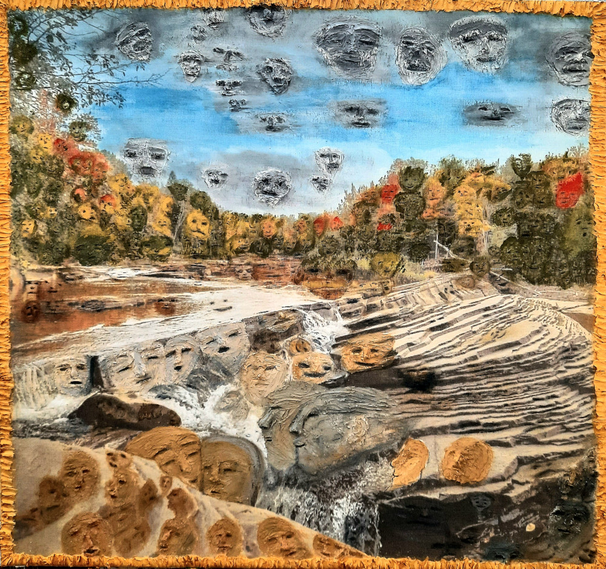
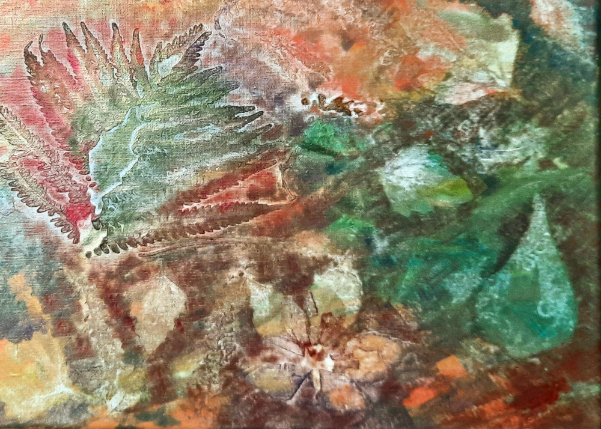
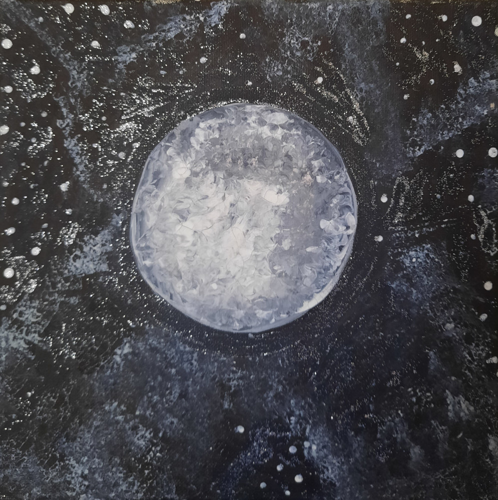
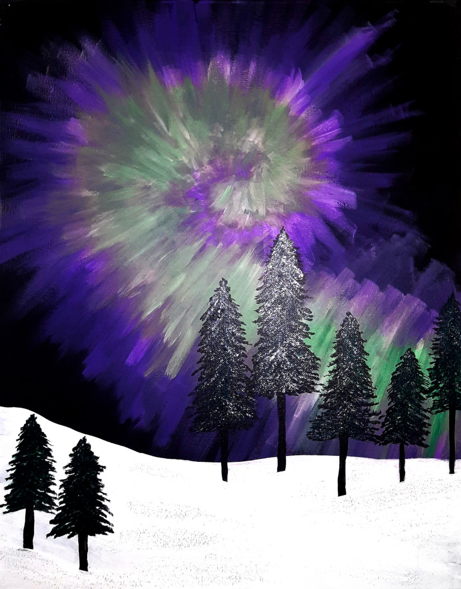
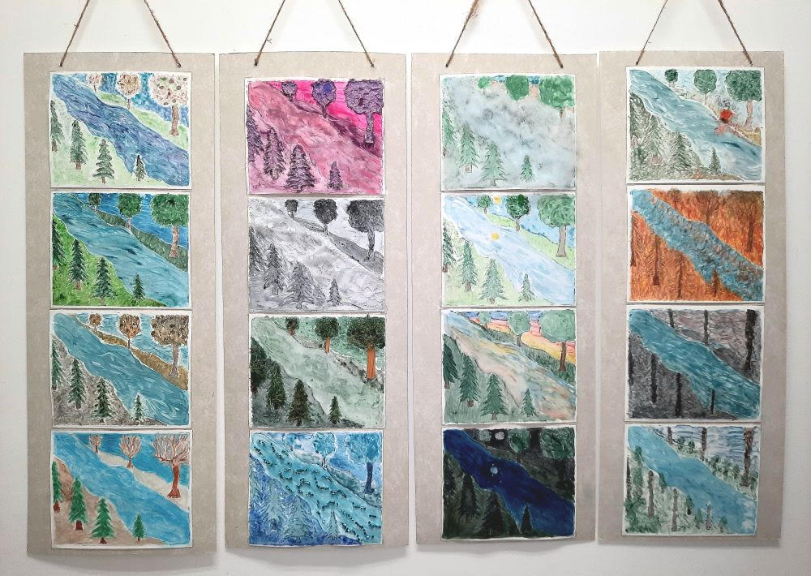
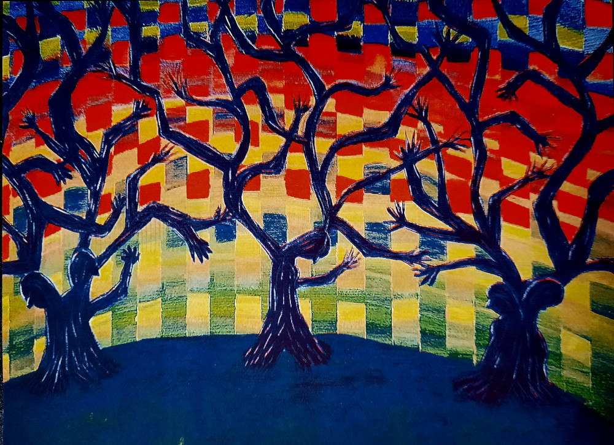

-
-

Landscape Faces
Acrylic paint and drywall compound
on canvas, 36" x 36" x 2"
October 2024Illusions
Acrylic paint on canvas, 40" x 28"
April 2024Encaustic Seasons
Encaustic wax on wood, each 5" x 7"
April 2024Freedom Flight
Acrylic Paint and texture paste
on wood panel, 21" x 21"
March 2024Angry Forest
Acrylic paint, and air dry clay
on canvas, 12" x 16"
February 2024
Mountain Stream
Acrylic paint, spray paint, texture paste,
and band sawed dimensional elements on canvas, 18" x 24"
February 2024Minnesota Nighttime
Acrylic paint, glitter,
and embellishments on wood, 20" x 24"
February 2024MN Winter
Acrylic paint on canvas, 18" x 24"
April 2023
Moral Decision
Acrylic paint, texture paste, and glitter, 18" x 24"
November 2022Foggy Morning
Acrylic paint, raffia, and glue
on canvas, 12" x 16"
November 2022Leaves Impressions
Acrylic paint on canvas, 12" x 16"
August 2022Sunlit Forest
Acrylic paint and texture paste on canvas,
30" x 20" x 2"
April 2022Rocky Waterfall
Acrylic paint, texture paste,
and glitter on canvas, 24" x 18"
April 2022Distortion
Acrylic paint on canvas, 18 x 24" x 2"
March 2022Symbiotic Tree
Acrylic paint on canvas, 10" x 10"
March 2022Moonrise
Acrylic paint on canvas, 10" x 10"
July 2021Four Seasons
Acrylic paint on canvas
July 2021Aurora Swirl
Acrylic Paint on Canvas, 18" x 24"
June 2021 -

Snapshot of Life
Watercolor prints on paper with various embellishments
like lace, moss, wood, polyfill, glitter, paper pulp, etc.
Each panel is about 30" x 11"
October 2024
Birch Forest
Reduction Wood Cut Shina Block,
Oil based ink print on canvas, 9" x 12"
April 2022
Trees Have Feelings Too
Block print from photo
printed on a printing press, 10" x 14"
October 2022 -
Amazing Birch Trees
Risograph Digital Poster 17" x 11"
December 2023
Minnesota Biomes
Risograph Digital Poster 17" x 11"
November 2023
Bonfire in the Woods
Digital print, 12" x 12"
March 2024
Wish You Were Here
Digital Animation
March 2024

Fall Park
Digital Animation
October 2024

Rock Falls
Digital Animation
October 2024
-
Paintings - nemaa.org/artists/mndreamart/
Jewelry - Earrings $10
Jewelry - Earrings $10
Soaps $4
Soaps $4
Candles $2 - $10
Zines $1 each
Lip Balms $1 each
Risograph - 8" x 10" print $10
Risograph - 10" x 14" print $10
Risograph - 17" x 11" poster $10
Risograph - 17" x 11" poster $10
Color poster $10
More gifts at mnmunchies.com
-
Classes
Workshops and Paint Nights will be offered as an open event. The next one is in December. Check back for more details.
You can also book a private event. Minimum 4 people, maximum 8 people if I am hosting for you.
I can also come to you if you are having an event or party that you are hosting. Preferably no more than 15. Minimum is still 4. I will bring all of the supplies to you and you can choose the subject of the painting we will be doing.
Commisions
I am open for landscape type commissions. I have painted a large rain barrel on commission, several landscape paintings (acrylic paint on canvas) of multiple sizes, and a mural. Contact me if you would like me to paint something special for you.
-
Artist Biograghy
Denise Lau is a landscape dimensional painter and mono-printmaker who will graduate from the University of Minnesota in May of 2025 with a Bachelor of Fine Arts. Her work has been seen in Art-A-Whirl, F-O-K Creatives, Squirrel Haus, the MN Zoo’s Hanfl Nature Center, and numerous Regis West exhibits. She has accepted individual commissions, participated in North East Minneapolis Art Association’s 10 x 10 Art in the Round fundraiser, was the president of the University of Minnesota’s Printmaking Club, Bohemian Press, and a member of the Sculpture Club. She has coordinated the Van Cleve Park art fairs for the past two years and has painted 30 feet of the Gateway Mural near this park in Minneapolis. Her work is in numerous private collections throughout the Midwest where she works as a freelance artist and instructor.
Artist Statement
I am a mixed-media experimental painter and printmaker. I love to learn new techniques and invent my own, expanding my knowledge of processes and utilizing what I have learned to create landscapes with a twist of reality. I am drawn to landscapes and making repeated images using different processes, mediums, colors, embellishments, and textures.
My landscapes are colorful and sometimes surreal because when I look at landscapes I see faces in the trees, clouds, and everywhere. I enjoy sharing what I see in my paintings so my viewers can see how the world looks to me. Oftentimes, the trunk of the trees have faces and the branches are arms with fingers.
My acrylic paintings include a variety of dimensional elements like texture paste, wood, glitter, fabrics, raffia, hand cut band-sawed wood pieces, and more.
I have tried just about every way there is to make prints. Once I made a book that used the same image but it was printed multiple different ways like intaglio, screen printed, laser cut, image transfer and many other ways. I recently finished another series, “Snapshot of Life,” where I began by drawing a landscape digitally and then cut it out onto an acrylic sheet with the laser cutter. I then painted it with watercolors 16 different ways and put it through the printing press to make monotype prints of the same image. I used dimensional elements to emphasize the time of day, season, or the stages of a forest fire. There were 4 sets of 4 images mounted on their own long board each with a theme. I am currently working on expanding this series into 32 dimensional monoprints.
Link to Resumé
-
Thank you for your interest in MN Dream Art. Feel free to contact me at MNdreamArt@gmail.com